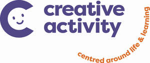

Trade Mark Journal No.2025/039 26 September 2025
UK00004234606 16 July 2025 (6,9,11,12,15,16,19,20,27,28,35,37,42)

- Class 6
- Cabins made of metal; Prefabricated metallic soundproof cabins; portable and pop up sensory pods and structures (of metal) incorporating lights and lighting for use in children's education and in the classroom and other educational settings.
- Class 9
- Scientific, nautical, surveying, photographic, cinematographic, optical, weighing, measuring, signalling, checking (supervision), life-saving and teaching apparatus and instruments; ; audio visual equipment and apparatus; LED displays; LED light displays; electronic touchscreen displays; smart lighting controls; electronic apparatus; digital sensory devices; application software for smart devices, smart phones and other hand held devices; computer software; downloadable computer software; downloadable game software for smart devices, smart phones and other hand held devices; downloadable educational materials; downloadable educational course materials; educational software for children; educational apparatus and instruments; audio books featuring educational materials for children and adults; Computer software applications for mobile phones featuring educational materials for children and parents; interactive software; computer games; interactive computer games; projection apparatus with artificial intelligence; audiovisual instruments and apparatus; apparatus to display images; display devices .
- Class 11
- Apparatus and installations for lighting; lighting installations, apparatus and devices; Led lamps; led equipment for use in sensory stimulation for use in class rooms and for educational purposes; indoor lighting fixtures; outdoor lighting fixtures; led lighting apparatus.
- Class 12
- Bicycles; Bicycles for children; collapsable bicycles; scooters; push scooters; pedal scooters; motorized skateboards; Pumps for bicycles; Bags for bicycles; Mudguards for bicycles; panniers for bicycles; saddle bags for bicycles; Baskets adapted for bicycles; Child seats for bicycles; bells for bicycles; Water bottle holders for bicycles; Stabilisers [wheels] for use on bicycles; trolleys .
- Class 15
- Musical instruments; Musical instruments for children; musical accessories; musical synthesisers; Whistles [musical instruments]; Pitch pipes (Musical -); Musical instrument cases; Drums [musical instrument]; Recorders [musical instruments]; Percussion instruments [musical]; Rattles [musical instruments]; Tin whistles [musical instruments]; Holders for musical instruments .
- Class 16
- Paper, cardboard and goods made from these materials not included in other classes; stationery; artists' materials; artists paints; artists brushes; artists materials; paint brushes; Arts and crafts clay kits; Craft paper [arts and crafts]; Arts and crafts paint kits; Children's arts and crafts paper kits; Arts and crafts paint kits [school supplies]; boards, instruments, pads and sets for writing or drawing; easels; erasers; glue for stationery purposes; ink, inking pads and ink sticks; modelling materials; nibs; paint boxes and palettes; pencils, pastels and pens; rulers and stencils; tracing paper; Pencil sharpeners [electric or non-electric]; watercolors (paintings); modeling clay; paint stick (markers); erasers; pens; drawing pens; easels (painters' -); glues for the office; glue for stationery or household purposes; papier mache statuettes; stationery cases; writing cases [sets]; pen cases; flip chart cases; writing cases [stationery]; stencil cases; chalk; artists' watercolor [watercolour] saucers; gums [adhesives] for stationery or household purposes; printed matter; pencils; drawing instruments for blackboards; mechanical pencils; writing or drawing books; school supplies [stationery]; plastics for modelling; molds for modelling clays [artists' materials]; palettes for painters; wood pulp paper; crayons; paint brushes; writing brushes; painters' brushes; paintings [pictures], framed or unframed; drawing boards; rulers for drawing; charge for pen; coloured lead pencils; paper patterns; pen ink cartridges; office supplies, except furniture; rubber erasers; pencil sharpeners, electric or non-electric; moulds for modeling clay [artist materials]; adhesives [glues] for stationery or household purposes; correcting liquids for documents; drawing boards [painters' articles]; modelling materials; modelling paste; ink; stationery; square rulers; Musical scores; Printed musical publications; Musical score books; comic books; graphic novels; magazines; paper periodicals; black boards.
- Class 19
- Portable cabins; sheds (not of metal); play houses ( not of metal); play sand; play ground tiles (not of metal); rubber crumb surfacing for use in play areas and children's play areas; portable and pop up sensory pods and structures (not of metal) incorporating lights and lighting for use in children's education and in the classroom and other educational settings.
- Class 20
- Furniture; Displays, stands and signage, non-metallic; Ladders and movable steps, non-metallic; Containers, and closures and holders therefor, non-metallic; Statues, figurines, works of art and ornaments and decorations, made of materials such as wood, wax, plaster or plastic, included in the class; Beds, mattresses, pillows and cushions; Furniture for camping; Furniture for children; furniture for the class room; Clothes hangers, clothes stands [furniture] and clothes hooks; Furniture for kitchens; Outdoor furniture; Household furniture; Furniture units; Frames; Desks and tables; Seating furniture; Furniture parts; Crates and pallets, non-metallic; Furniture for house, office and garden; Fitted coverings for furniture; filing cabinets; fitted replacement seat covers for furniture; shaped seat covers for furniture; credenzas [furniture]; storage drawers [furniture]; cupboards; inflatable furniture; upholstered furniture; upholstered convertible furniture; furniture for displaying goods; extendible sofas; seats adapted for babies; babies' bouncing chairs; furniture; bathroom furniture; bamboo furniture; benches [furniture]; high stools [furniture]; office furniture; office armchairs; armchairs; fitted furniture; footrests; lawn furniture; glass furniture; wooden furniture; furniture made of rattan; furniture for children; wickerwork; furniture for kitchens; furniture of plastic materials; playpens for babies; loudspeaker stands [furniture]; leather furniture; furniture of metal; outdoor furniture; integrated furniture; room dividers; keyboards for hanging keys; chests for toys; umbrella stands; furniture chests; living room furniture; boxes of wood or plastic; displays, stands and signage, non-metallic; flower-pot pedestals; hooks for towels (non-metallic -); hooks for wall hangings (non-metallic -); suspension rods (non-metallic -) for hanging up articles; wall hooks of non-metallic materials; Cantilevered brackets of non-metallic materials [other than for building]; non-metallic containers [other than for household or kitchen use]; closures for containers, non-metallic; portable boxes [containers] of plastic; non-metallic bins [other than dust bins]; containers in the form of boxes made of wood; chairs; work stools; drafting chairs; swivel chairs; dining chairs; high chairs for babies; easy chairs; chair pads; pouffes [furniture]; tables; worktables; office desks; office tables; Coffee tables; dining room tables; end tables; side tables; baby changing platforms; clothes lockers; wall cupboards; plate racks; Bedside cabinets; shoe cabinets; racks [furniture]; library shelves; book rests [furniture]; hanging storage racks [furniture]; chests of drawers; box shelves; wine racks [furniture]; sofas; divanes; stools; chests, not of metal; baskets, non-metallic; picture and photograph frames; mirrors [furniture]; Bathroom mirrors; Wall mirrors; mirror frames; tiles (Mirror -) for fixing to walls; Statues, figurines, works of art and ornaments and decorations, made of materials such as wood, wax, plaster or plastic, included in the class; works of art of wood, wax, plaster or plastic; statues of wood, wax, plaster or plastic; ornamental models made of wood, wax, plaster, wood, wax; models [ornaments] made of synthetic resin; wind chimes [decoration]; gazing globes; decorative window finials; plaques (decorative wall -) [furniture] not of textile; curtain tracks; curtain suspension devices; supports for supporting curtain poles; curtain hooks; curtain rings; curtain rodscoat racks; hat racks [furniture]; hat stands; garment rails; valet stands; clothes hangers, clothes stands [furniture] and clothes hooks; mannequins and tailors' dummies; magazine racks; bedding, mattresses, pillows and cushions; bedding for cots [other than bed linen]; beds; adjustable beds; transportable beds; children's beds; wooden beds; slatted bases for beds; bed heads; rods for beds; futons; bed casters, not of metal; furniture incorporating beds; furniture being convertible into beds; beds for animals; parts, spare parts and accessories for the aforesaid goods included in this class .
- Class 27
- Mats and rugs; cork floor mats; number squares for children made from cloth, fabric, cork and rubber; exercise mats; fabric wall coverings and wall hangings; Floor coverings [mats] being sheet materials for use in sporting activities; Floor coverings [mats] for use in sporting activities; Floor coverings [mats] for use in gymnastic activities; floor mats made of cork, paper, plastic, rubber, textiles and vinyl; foam mats for use on play area surfaces; gymnasium exercise mats and floor coverings; puzzle mats (floor coverings); wall hangings (non textile) .
- Class 28
- Toys, games and playthings; Play houses; Wendy houses; Dolls' houses; Furniture for dolls' houses; Modular toy play houses; Hobbycraft kits for making toy model houses; toys; clockwork toys; musical toys; bath toys; sandbox toys; toys for sandpits; stuffed toys; infant toys; water toys; squeeze toys; stacking toys; sand toys; inflatable toys; drawing toys; rubber toys; toy buckets; toy spades; sandboxes; sand pits; toy scooters; sketching toys; electronic toys; model toys; windup toys; plastic toys; action toys ; wooden toys; fabric toys; cloth toys; pull toys; educational toys; puzzles (toys); soft toys; cuddly toys; bendable toys; smart toys; assembly toys; outdoor toys; crib toys; fidget toys; flying discs; balance bicycles (toys); action figure toys; puppet toys; finger puppet toys; water squirting toys; water pistols (playthings); inflatable pool toys; interlocking construction toys; plastic bath toys; remote controlled toys; musical instruments (toys); bean bag toys; building bricks (toys); ride on toys; sports games; sports balls; nets for sports; sleds (sports apparatus); climbing walls; climbing frames (play equipment); climbing units (play ground equipment); playground slides; playground sandboxes; playground apparatus; playground balls; swings (playgound equipment); seesaws for playgrounds; playground equipment for children; playground apparatus made of plastics, wood and metal; inflatable slides for children's playground; educational playthings; tricycles (playthings); masks (playthings); beanbags being playthings; inflatable toys (playthings) ; beach balls; paddle boards; white boards; chalk boards; Toy binoculars; Infants' swings; Infants' swing seats; Swings; Swings [playground equipment]; Swings [playthings]; sports equipment; balls for sports; balls being sports articles; sports and physical exercise equipment; sports games; sports gloves; skateboards.
- Class 35
- Retail services, online retail services, online ordering services and mail order catalogue services relating to cabins made of metal, prefabricated metallic soundproof cabins, scientific, nautical, surveying, photographic, cinematographic, optical, weighing, measuring, signalling, checking (supervision), life-saving and teaching apparatus and instruments, audio visual equipment and apparatus, LED displays, LED light displays, electronic touchscreen displays, smart lighting controls, electronic apparatus, digital sensory devices, application software for smart devices, smart phones and other hand held devices, computer software, downloadable computer software, downloadable game software for smart devices, smart phones and other hand held devices, downloadable educational materials, downloadable educational course materials, educational software for children, educational apparatus and instruments, audio books featuring educational materials for children and adults, Computer software applications for mobile phones featuring educational materials for children and parents, interactive software, computer games, interactive computer games, projection apparatus with artificial intelligence, audiovisual instruments and apparatus, apparatus to display images, display devices; retail services, online retail services, online ordering services and mail order catalogue services relating to apparatus and installations for lighting, lighting installations, apparatus and devices, LED lamps, LED equipment for use in sensory stimulation for use in class rooms and for educational purposes, indoor lighting fixtures, outdoor lighting fixtures, LED lighting apparatus, portable and pop up sensory pods and structures incorporating lights and lighting for use in children's education and in the classroom and other educational settings; retail services, online retail services, online ordering services and mail order catalogue services relating to bicycles, bicycles for children, collapsable bicycles, scooters, push scooters, pedal scooters, skateboards, pumps for bicycles, bags for bicycles, mudguards for bicycles, panniers for bicycles, saddle bags for bicycles, baskets adapted for bicycles, child seats for bicycles, bells for bicycles, water bottle holders for bicycles, stabilisers [wheels] for use on bicycles, trolleys; retail services, online retail services, online ordering services and mail order catalogue services relating to musical instruments, musical instruments for children, musical accessories, musical synthesisers, whistles [musical instruments], pitch pipes (musical -), musical instrument cases, drums [musical instrument], recorders [musical instruments], percussion instruments [musical], rattles [musical instruments], tin whistles [musical instruments], holders for musical instruments; retail services, online retail services, online ordering services and mail order catalogue services relating to paper, cardboard and goods made from these materials not included in other classes, stationery, artists' materials, artists paints, artists brushes, artists materials, paint brushes, arts and crafts clay kits, craft paper [arts and crafts], arts and crafts paint kits, children's arts and crafts paper kits, arts and crafts paint kits [school supplies], boards, instruments, pads and sets for writing or drawing, easels, erasers, glue for stationery purposes, ink, inking pads and ink sticks, modelling materials, nibs, paint boxes and palettes, pencils, pastels and pens, rulers and stencils, tracing paper, pencil sharpeners [electric or non-electric], watercolors (paintings), modelling clay, paint stick (markers), erasers, pens, drawing pens, easels (painters' -), glues for the office, glue for stationery or household purposes, papier mache statuettes, stationery cases, writing cases [sets], pen cases, flip chart cases, writing cases [stationery], stencil cases, chalk, artists' watercolor [watercolour] saucers, gums [adhesives] for stationery or household purposes, printed matter, pencils, drawing instruments for blackboards, mechanical pencils, writing or drawing books, school supplies [stationery], plastics for modelling, molds for modelling clays [artists' materials], palettes for painters, wood pulp paper, crayons, paint brushes, writing brushes, painters' brushes, paintings [pictures], framed or unframed, drawing boards, rulers for drawing, charge for pen, coloured lead pencils, paper patterns, pen ink cartridges, office supplies, except furniture, rubber erasers, pencil sharpeners, electric or non-electric, moulds for modelling clay [artist materials], adhesives [glues] for stationery or household purposes, correcting liquids for documents, drawing boards [painters' articles], modelling materials, modelling paste, ink, stationery, square rulers, musical scores, printed musical publications, musical score books, comic books, graphic novels, magazines, paper periodicals; retail services, online retail services, online ordering services and mail order catalogue services relating to portable cabins, sheds (not of metal), play houses ( not of metal), play sand, play ground tiles (not of metal), rubber crumb surfacing for use in play areas and children's play areas; retail services, online retail services, online ordering services and mail order catalogue services relating to furniture, displays, stands and signage, non-metallic, ladders and movable steps, non-metallic, containers, and closures and holders therefor, non-metallic, statues, figurines, works of art and ornaments and decorations, made of materials such as wood, wax, plaster or plastic, included in the class, Beds, mattresses, pillows and cushions, furniture for camping, furniture for children, furniture for the class room, clothes hangers, clothes stands [furniture] and clothes hooks, furniture for kitchens, outdoor furniture, household furniture, furniture units, frames, desks and tables, seating furniture, furniture parts, crates and pallets, non-metallic, furniture for house, office and garden, fitted coverings for furniture, filing cabinets, fitted replacement seat covers for furniture, shaped seat covers for furniture, credenzas [furniture], storage drawers [furniture], cupboards, inflatable furniture, upholstered furniture, upholstered convertible furniture, furniture for displaying goods, extendible sofas, seats adapted for babies, babies' bouncing chairs, furniture, bathroom furniture, bamboo furniture, benches [furniture], high stools [furniture], office furniture, office armchairs, armchairs, fitted furniture, footrests, lawn furniture, glass furniture, wooden furniture, furniture made of rattan, furniture for children, wickerwork, furniture for kitchens, furniture of plastic materials, playpens for babies, loudspeaker stands [furniture], leather furniture, furniture of metal, outdoor furniture, integrated furniture, room dividers, keyboards for hanging keys, chests for toys, umbrella stands, furniture chests, living room furniture, boxes of wood or plastic, displays, stands and signage, non-metallic, flower-pot pedestals, hooks for towels (non-metallic -), hooks for wall hangings (non-metallic -), suspension rods (non-metallic -) for hanging up articles, wall hooks of non-metallic materials, cantilevered brackets of non-metallic materials [other than for building], non-metallic containers [other than for household or kitchen use], closures for containers, non-metallic, portable boxes [containers] of plastic, non-metallic bins [other than dust bins], containers in the form of boxes made of wood, chairs, work stools, drafting chairs, swivel chairs, dining chairs, high chairs for babies, easy chairs, chair pads, pouffes [furniture], tables, worktables, office desks, office tables, coffee tables, dining room tables, end tables, side tables, baby changing platforms, clothes lockers, wall cupboards, plate racks, bedside cabinets, shoe cabinets, racks [furniture], library shelves, book rests [furniture], hanging storage racks [furniture], chests of drawers, box shelves, wine racks [furniture], sofas, divanes, stools, chests, not of metal, baskets, non-metallic, picture and photograph frames, mirrors [furniture], bathroom mirrors, wall mirrors, mirror frames, tiles (mirror -) for fixing to walls, statues, figurines, works of art and ornaments and decorations, made of materials such as wood, wax, plaster or plastic, included in the class, works of art of wood, wax, plaster or plastic, statues of wood, wax, plaster or plastic, ornamental models made of wood, wax, plaster, wood, wax, models [ornaments] made of synthetic resin, wind chimes [decoration], gazing globes, decorative window finials, plaques (decorative wall -) [furniture] not of textile, curtain tracks, curtain suspension devices, supports for supporting curtain poles, curtain hooks, curtain rings, curtain rods, coat racks, hat racks [furniture], hat stands, garment rails, valet stands, clothes hangers, clothes stands [furniture] and clothes hooks, mannequins and tailors' dummies, magazine racks, bedding, mattresses, pillows and cushions, bedding for cots [other than bed linen], beds, adjustable beds, transportable beds, children's beds, wooden beds, slatted bases for beds, bed heads, rods for beds, futons, bed casters, not of metal, furniture incorporating beds, furniture being convertible into beds, beds for animals, parts, spare parts and accessories for the aforesaid goods included in this class; retail services, online retail services, online ordering services and mail order catalogue services relating to mats and rugs, cork floor mats, number squares for children made from cloth, fabric, cork and rubber, exercise mats, fabric wall coverings and wall hangings, floor coverings [mats] being sheet materials for use in sporting activities, floor coverings [mats] for use in sporting activities, floor coverings [mats] for use in gymnastic activities, floor mats made of cork, paper, plastic, rubber, textiles and vinyl, foam mats for use on play area surfaces, gymnasium exercise mats and floor coverings, puzzle mats (floor coverings), wall hangings (non textile); retail services, online retail services, online ordering services and mail order catalogue services relating to toys, games and playthings, play houses, wendy houses, dolls' houses, furniture for dolls' houses, modular toy play houses, hobbycraft kits for making toy model houses, toys, clockwork toys, musical toys, bath toys, sandbox toys, toys for sandpits, stuffed toys, infant toys, water toys, squeeze toys, stacking toys, sand toys, inflatable toys, drawing toys, rubber toys, toy buckets, toy spades, sandboxes, sand pits, toy scooters, sketching toys, electronic toys, model toys, windup toys, plastic toys, action toys , wooden toys, fabric toys, cloth toys, pull toys, educational toys, puzzles (toys), soft toys, cuddly toys, bendable toys, smart toys, assembly toys, outdoor toys, crib toys, fidget toys, flying discs, balance bicycles (toys), action figure toys, puppet toys, finger puppet toys, water squirting toys, water pistols (playthings), inflatable pool toys, interlocking construction toys, plastic bath toys, remote controlled toys, musical instruments (toys), bean bag toys, building bricks (toys), ride on toys, sports games, sports balls, nets for sports, sleds (sports apparatus), climbing walls, climbing frames (play equipment), climbing units (play ground equipment), playground slides, playground sandboxes, playground apparatus, playground balls, swings (playground equipment), seesaws for playgrounds, playground equipment for children, playground apparatus made of plastics, wood and metal, inflatable slides for children's playground, educational playthings, tricycles (playthings), masks (playthings), beanbags being playthings, inflatable toys (playthings) , beach balls, paddle boards, lack boards, white boards, chalk boards, Toy binoculars, Infants' swings, Infants' swing seats, Swings, Swings [playground equipment], Swings [playthings], sports equipment, balls for sports, balls being sports articles, sports and physical exercise equipment, sports games, sports gloves .
- Class 37
- Installation services relating to audio visual equipment and apparatus for use with children; Installation services relating to audiovisual design services relating to classrooms and classroom equipment; Installation services relating to playgrounds, garden fixtures and fittings and playground equipment .
- Class 42
- Design services relating to audio visual equipment and apparatus for use with children; design services relating to audiovisual design services relating to classrooms and classroom equipment; design services relating to playgrounds, garden fixtures and fittings and playground equipment; design services relating to class rooms and class room equipment .
CREATIVE ACTIVITY GROUP LIMITED
Representative: Ansons